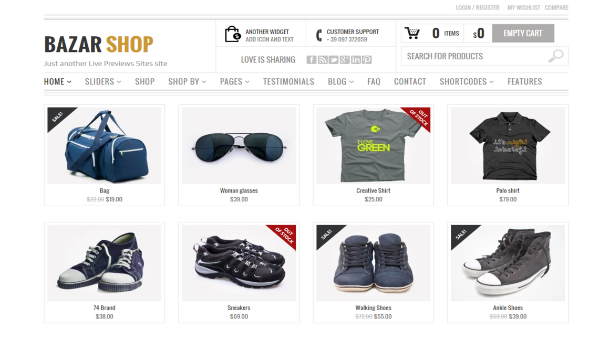

WooCommerce is the world’s most popular open-source eCommerce solution. Sellers have absolute control over your shop, starting with what you sell and how your shops looks. No matter what you're selling or how much you're selling possibilities are infinite and endless.WooCommerce will grow with you as you add more products, earn more customers, and recive more orders Your customers can pay however yhey'd like(offer check, chash on delivery, credit cards and PayPal).

This magnificent extension is integration between WooCommerce and Salesforce platform. It is the next generation extension enhancing the features of e-commerce and CRM. WooCommerce content is being synchronized with Salesforce to give a brand new picture to the concept of B2B and B2C deals, synchronization of Users, Bi-directional synchronization for Categories & Products with Real-time orders sync are available. The idea behind the concept is to increase data integrity, maintain proper inventory of stock, real-time order generation, provide a brilliant customer care services and much more.
Wallet System for WooCommerce Wordpress is a plugin which provides the customer a new way to make an online payment from their wallet system. The wallet amount can be stocked and can be used when required to purchase any good & services. The wallet amount can be easily added to wallet and purchase can be made at any time from anywhere. The customer can also transfer the wallet money to other customer accounts effectively. Also, view the complete Credit and debit transaction details of their wallets. The refund can also be feasible directly to the customer’s wallet.
Using the WooCommerce AliExpress plugin the user can manage multiple warehouses from his panel and can create mangers for the warehouses and can easily mass assign or unassign products to a warehouse. The user can also import products from AliExpress to his store and then assign those products to the warehouse accordingly. After receiving the order for AliExpress products from the store, the user will just need to place the order on AliExpress by simply clicking on the Place Order link and then make the payments accordingly. Using Dropshipping method the store owner does not need to keep the products stocked in his store. Instead, all the products are stored in different warehouses across the region. So when a customer places an order, the product is directly shipped from the nearest warehouse instead of the store. This saves a lot of time and shipping costs.
Using Purchase Order for WooCommerce, the admin can perform purchase management functions to create the orders, purchase orders, request for the quote, manage incoming shipments, and update incoming product information easily. The admin can manage the product inventory using this module either manually or automatically as per the configuration. The admin can create an automatic purchase order when the stock goes low in stock.
Stripe is a PCI compliant payment company which enables any user to make payments using a credit card. It will work live as well as Debugging mode. In this seller has to connect using stripe connect. Stripe payment gateway handles payments, including direct payouts to seller's bank account. No doubt stripe is the easiest and most scalable payment gateway of the modern time.
This Item only works with Webkul’s WordPress WooCommerce Multi Vendor Marketplace. Hence the Marketplace Plugin is Required, to make use of this Plugin. WordPress WooCommerce Marketplace Buyer Seller Chat Plugin is a chat system which helps Marketplace Seller and the Marketplace Buyer to start the conversation. In this plugin, any buyer can start to chat with any seller. Buyer can ask queries related to the product that seller is selling or any upcoming products information, and seller can also reply to any buyer about their queries. A healthy conversation between a buyer and a seller leads to more sales conversions. It is a user-friendly and customizable, where the administrator can customize the theme of the chat window and users list. This plugin is based on Socket.IO and the user need to install node on its server to use the plugin.
WordPress WooCommerce Marketplace Seller Coupons allows the seller to generate coupons for their products. The seller can provide the discount to the customers with the help of a coupon code. The customer can use the coupon at the time of checkout and take the advantage of discount. The coupon code will clearly identify who purchased items with a specific coupon code and can quickly identify the success or not of your promotion. It is proven that by adding coupons for discounts or free shipping will increase your conversion rate. If you are using special discounts in your traditional advertising, emails, direct mail, you will see a spike in traffic to these relevant pages.
WooCommerce PayPal Adaptive Payments plugin handles payments between the sender of a payment (customer) and one or more receivers (admin/seller) of the payment. It’s possible to split the order total with secondary receivers, so the payment and commission can easily be distributed among the receivers.
WordPress WooCommerce Admin Buyer Chat Plugin is a chat system which helps the admin and the buyer to start the conversation. This chat plugin establishes a real-time direct communication between admin and the buyers. Any buyer can start to chat with the admin. Buyer can ask queries related to the product that admin is selling or any upcoming products information, and admin can also reply to any buyer about their queries. Admin can chat with multiple buyers at the same time.
WordPress WooCommerce Web Push Notification Plugin allows the admin to send push notification messages to its subscribed users. Web push notifications are clickable messages that are sent by a website to their subscriber’s browsers. They work very similarly to mobile app push notifications (notifications sent by a mobile app that land in your notification tray) except that they work on websites instead of apps and can be accessed on all devices (desktop, mobile, tablet, etc). Web push notification is an important channel for E-commerce since it gives websites the power of instant communication to the subscriber and that too on all devices, whether it is a desktop mobile or tablet
Xtremo is a perfect WooCommerce theme for your online business. High-quality layout, responsive design, and the overall front end view will amaze your website users. This gorgeous WooCommerce theme is a perfect fit for various types of the e-commerce shopping online website such as Clothing, Shoes, Jewelry, Watch, Gadgets, electronics and more. Xtremo theme has various built-in features such as Mega Menu, Banner Slider, Custom Header Links, Social Media Links in Footer, Popular Categories, Marketplace Banner, and much more.